Página de accesorios
Aquí te mostraremos los accesorias para que puedas personalizar tu motocicleta
Accesorios que iluminan tu estilo
En D.A.Y. Motors no solo cuidamos el rendimiento de tu moto, también la hacemos destacar. Descubre nuestra amplia selección de accesorios que combinan funcionalidad y estilo, ideales para personalizar tu motocicleta y mejorar tu experiencia en cada ruta.
¿Qué encontrarás?
| Accesorio | Descripción |
|---|---|
| 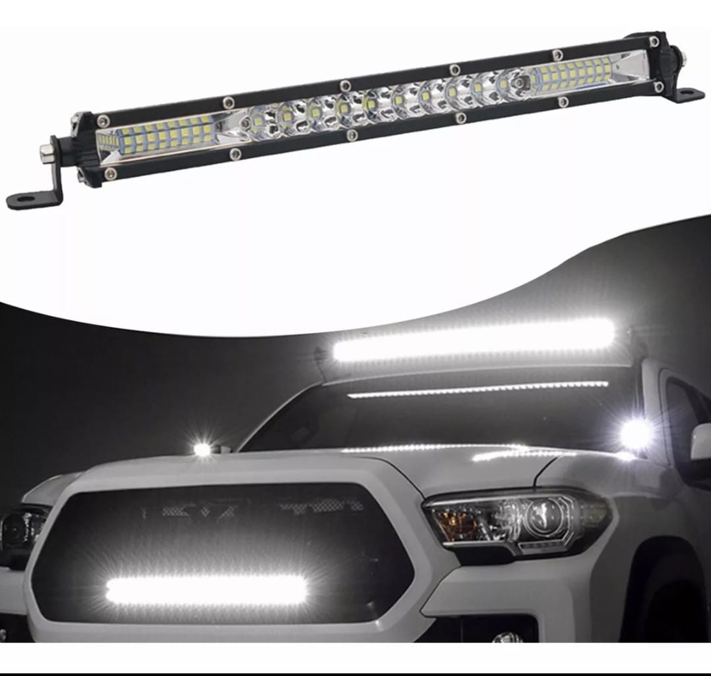 | faros LED de última generación, perfectos para motos, cuatrimotos, 4x4 y vehículos todo terreno. Características: Doble función: luz de largo alcance y luz de trabajo amplia. Alta potencia: máxima iluminación incluso en las rutas más oscuras. Estructura resistente: fabricados para soportar polvo, lluvia y vibraciones extremas. Fácil instalación: incluye soportes ajustables. |
| 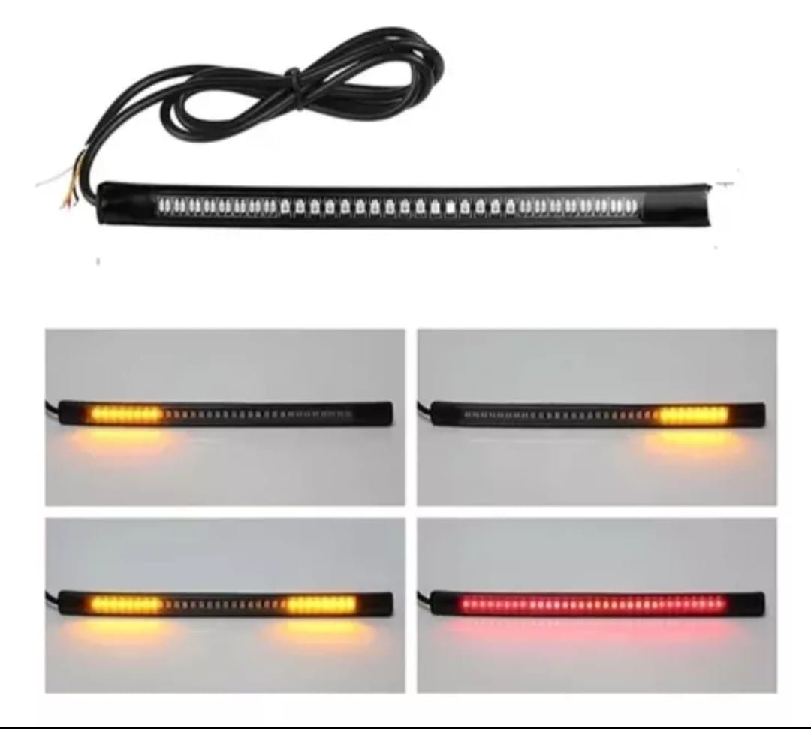 | Características: Multifunción 3 en 1: luz de freno, direccionales dinámicas y luz trasera. Tecnología LED: iluminación potente y ahorro de energía. Instalación sencilla: adaptable a casi cualquier moto. Diseño flexible: ideal para carenados curvos o superficies irregulares. Resistente al agua: preparada para todo tipo de climas. |
| >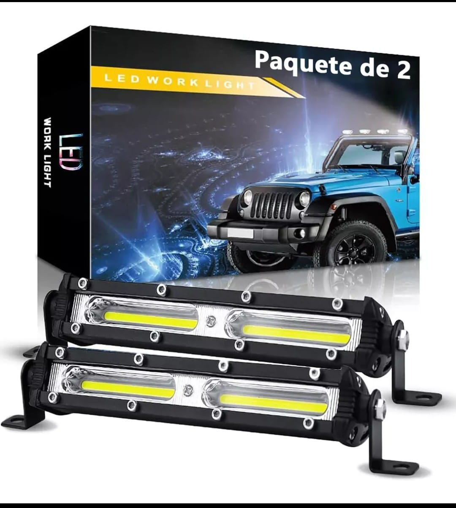 | Características: Luz blanca ultrabrillante, perfecta para conducción nocturna. Consumo eficiente, mayor duración y menor calentamiento. Carcasa resistente al agua y golpes. Compatible con la mayoría de modelos. Fácil instalación con soporte ajustable. |
| 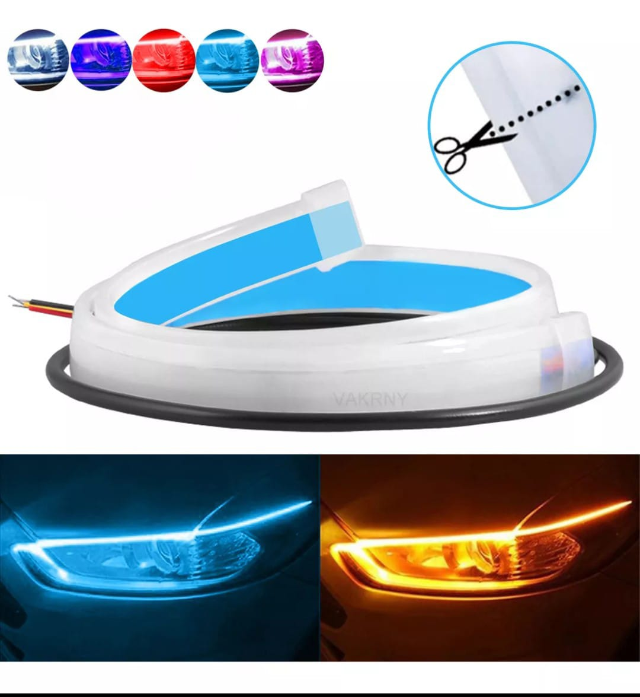 | Características: Multicolor: Elige entre colores vibrantes como azul, rojo, blanco, morado y más. Función dinámica: luz fija para circulación y luz secuencial para direccionales. Flexible y recortable: se adapta a cualquier forma de faro, perfecta para motos deportivas, urbanas o personalizadas. Resistente al agua: sin miedo a la lluvia o el polvo. Fácil instalación: compatible con sistemas de 12V. |
| 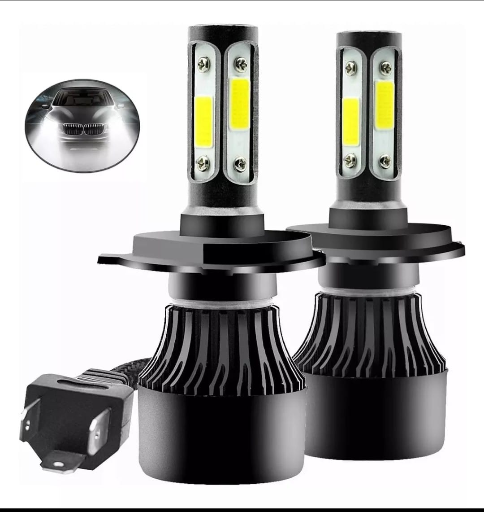 | Focos LED H4 - Alta Potencia y Máxima Visibilidad Tipo de conector: H4 (compatible con muchos modelos de autos) Tecnología: LED de alto brillo Voltaje: 12V - 24V (compatibles con sistemas eléctricos de autos y camionetas) Temperatura de color: 6000K (Luz blanca fría, ideal para mejorar la visibilidad nocturna) Material: Cuerpo de aluminio con sistema de enfriamiento de alta eficiencia (disipador térmico) Durabilidad: Más de 30,000 horas de vida útil Resistencia: Diseño resistente al agua y al polvo (grado IP65 o superior) Instalación: Plug & Play (fácil instalación, sin modificaciones) |
| 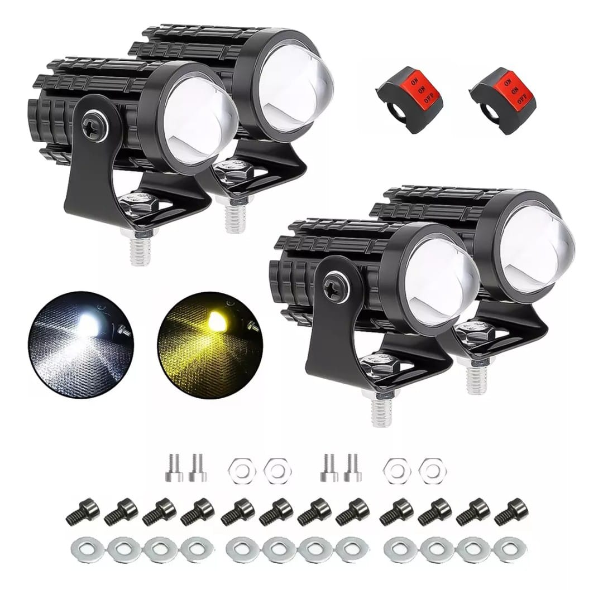 | Características Destacadas: Doble iluminación (Blanco y Amarillo): Ideal para cualquier condición climática. Lente tipo lupa: Asegura un haz de luz más concentrado y potente. Material de alta resistencia: Carcasa de aluminio con diseño disipador de calor. Soporte ajustable: Fácil instalación y adaptación a diferentes ángulos. Incluye kit de instalación: Tornillos, arandelas y tuercas para un montaje rápido y seguro. Interruptores incluidos: Controla fácilmente el encendido y cambio de luz. |
| 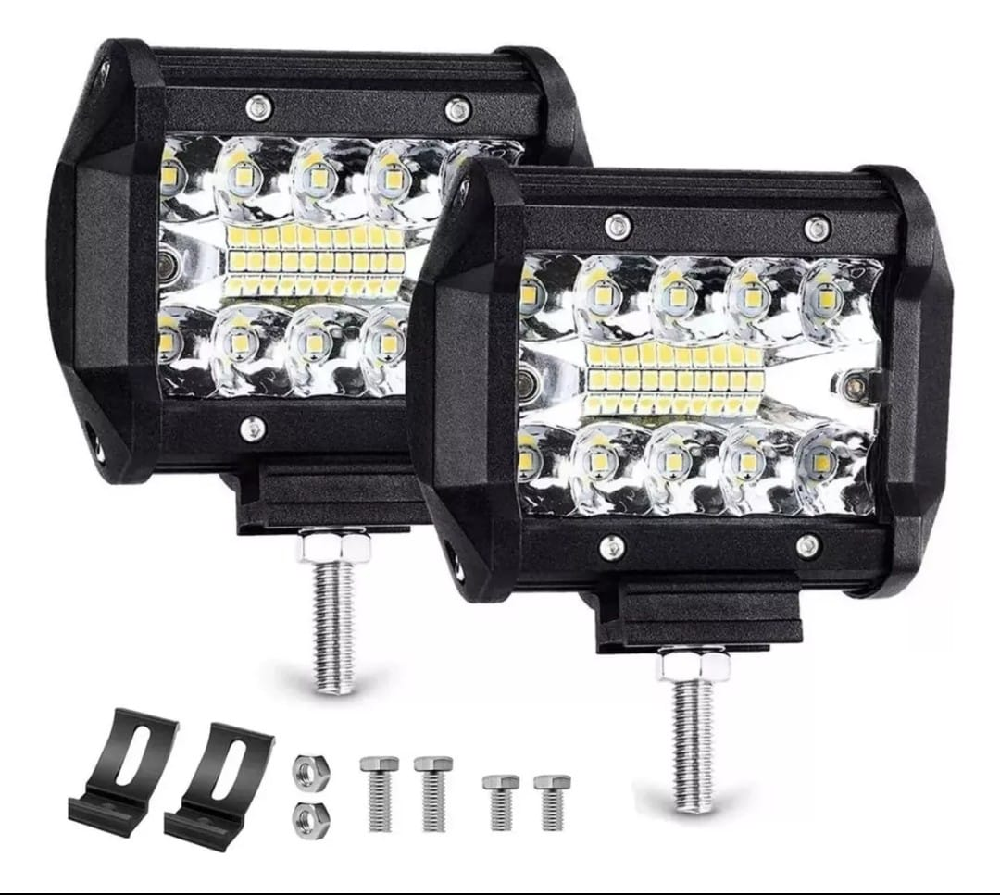 | Características del Producto: Tipo: Faros LED auxiliares rectangulares Cantidad: 2 unidades Material: Carcasa de aluminio resistente con disipador de calor Color del cuerpo: Negro Iluminación: LED de alta potencia con luz blanca brillante Modos de luz: Luz de enfoque y luz de dispersión combinadas Lente: Acrílico resistente a impactos Base de montaje: Ajustable para diferentes ángulos de iluminación Incluye: Tornillos, tuercas y soportes para instalación Uso recomendado: Ideal para motocicletas, camionetas, Jeeps, ATV y otros vehículos |
| 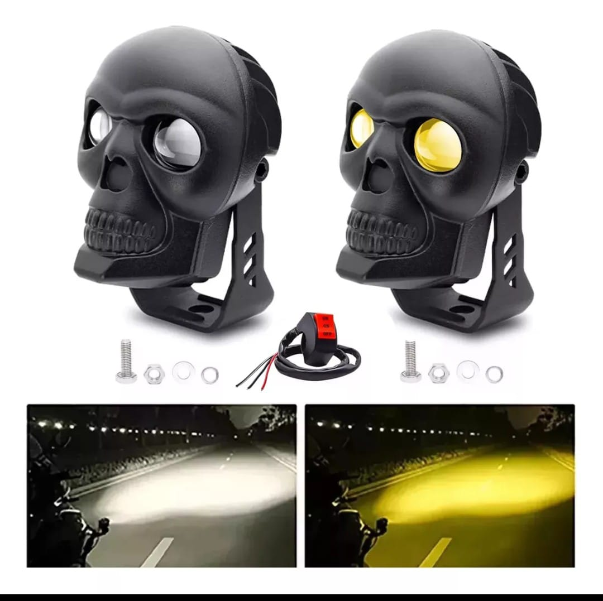 | Luces LED en Forma de Calavera para Motos Características: Diseño innovador con forma de calavera para un look llamativo y personalizado. Iluminación LED de alta potencia con luz blanca y amarilla, ideal para mejorar la visibilidad en carretera. Fabricadas con materiales de alta calidad y resistencia al agua, perfectas para cualquier clima. Fácil instalación y compatibilidad con la mayoría de motocicletas. Incluye interruptor y accesorios de montaje. |
| 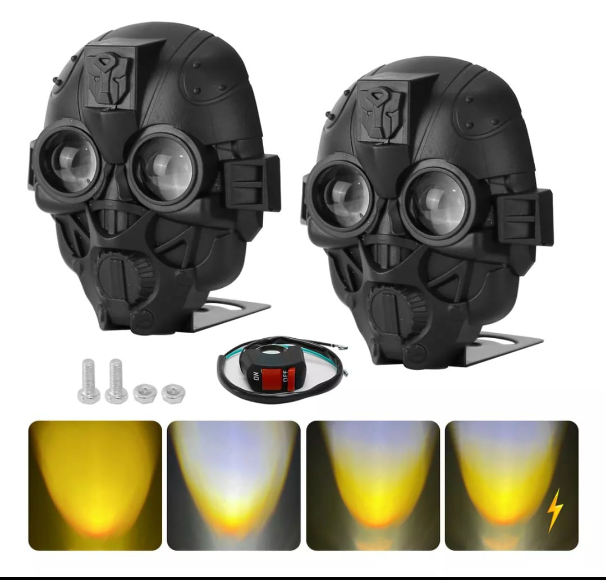 | Luces LED con Diseño Futurista para Motos. Características: Diseño inspirado en máscaras tácticas para un aspecto imponente y moderno. Iluminación LED de alta potencia con tres modos de luz: blanca, amarilla y combinación de ambas. Fabricadas con materiales de alta resistencia y protección contra el agua y el polvo. Incluyen interruptor de encendido y accesorios para una instalación sencilla. Compatibles con la mayoría de motocicletas y vehículos todoterreno. |
| 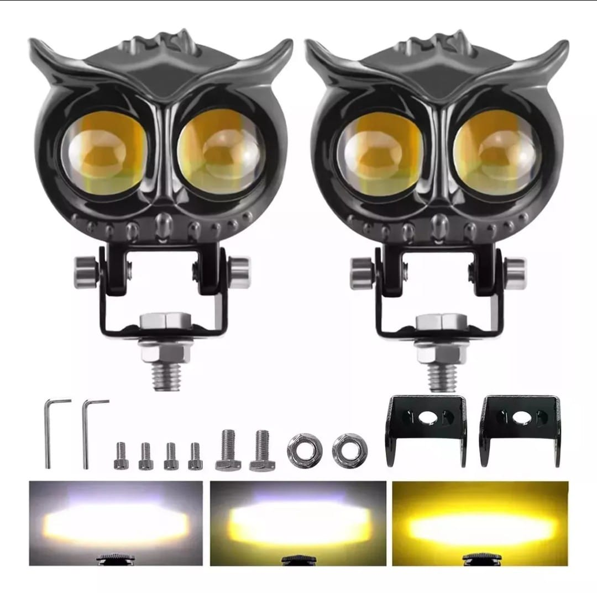 | Descripción del producto. Color: negro Tipo de lámpara: foco Temperatura de color: 6000 K/3000 K Brillo: 6000 lm Lumen: 3000 lm por lámpara, 6000 lm por par Potencia: 12 W Voltaje: voltaje 12V Material: aleación de aluminio de aviación Vida útil: hasta 30.000 horas en uso normal Temperatura de funcionamiento: de -40 grados Celsius a +80 Celsius Principio de disipación de calor: aleación de aluminio aviación tipo valla de disipación de calor Grado de impermeabilidad: IP67 Tipo de luz: luz puntual/luz antiniebla/luz de conducción/luz de proyección |
| 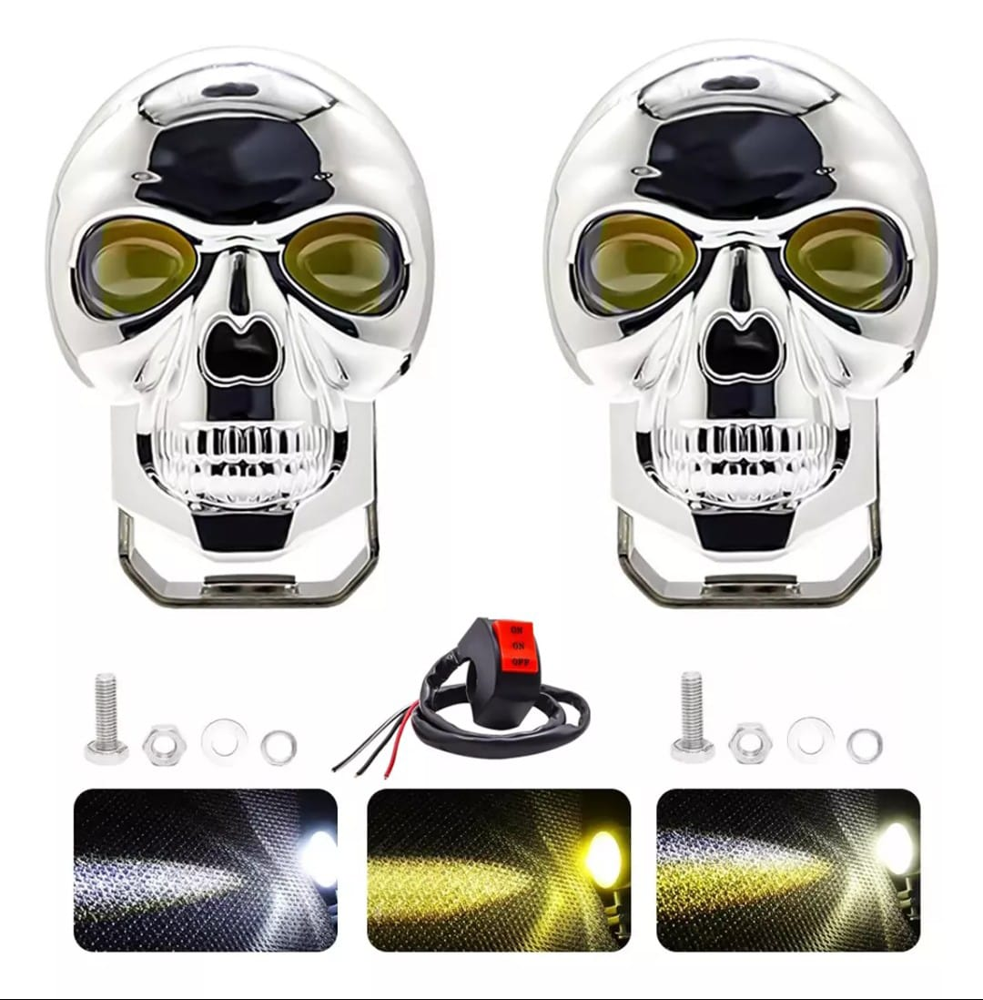 | Especificación: Potencia: 38W Lumen:3000LM Nombre del producto:Dos Color Faros Led Color de la carcasa de la luz: negro Bicolor: blanco/ámbar Temperatura de color: 3000k, 6000k Material: aleación de aluminio fundido a presión cáscara, lente óptica de PC Temperatura de trabajo: -40-185 Grado de impermeabilidad: IP67 Vida útil: 50000 horas Lista de paquetes: Piloto LED*2, Juego de tuercas*2 |
| 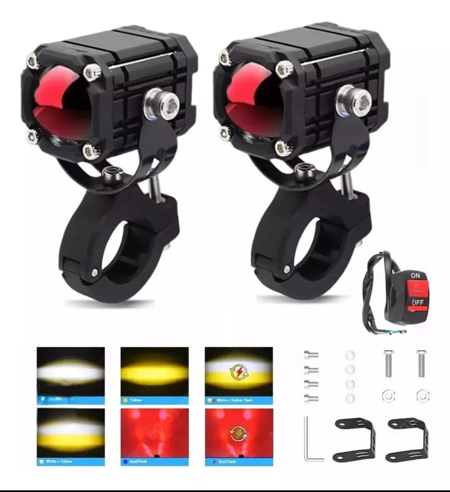 | -- 6 Modos de Luz : Amarillo (luz de cruce), Blanco (luz de carretera) , Rojo:(ojo de demonio), (flash); Nota: 1.Amarillo puede ser luz de carretera y blanco puede ser luz de cruce, sólo tiene que instalar de acuerdo a su necesidad . 2. Pulse el interruptor para cambiar el modo de las luces. Función de luz blanca lo suficientemente brillante para el día y la noche, la función de luz ámbar ayuda a ver más claro en la niebla / lluvia / nieve, y la función de luz estroboscópica garantizar una advertencia más eficaz a otros vehículos. |
| 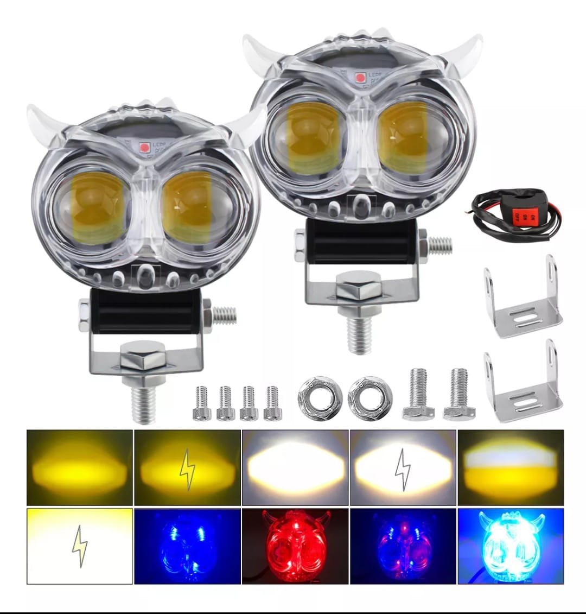 | 10 modos de iluminación: A diferencia de otros reflectores, la mayoría de los reflectores sólo emiten un color de luz (blanco o amarillo). Nuestro reflector LED puede proporcionar 10 modos de iluminación. Modo 1: haz ámbar 3000k/amarillo (utilizado como luz antivaho). Modo 2:Luz estroboscópica amarilla Modo 3:Blanco 6000K para luz de carretera (utilizado como luz de marcha) Modo 4: Luz estroboscópica blanca Modo 5:Luz amarilla+blanca(4500K) Modo 6: Luz estroboscópica amarilla y blanca Modo 7: Luz azul Modo 8: Luz roja Modo 9: luz roja y azul Modo 10: Luz estroboscópica roja y azul Ya sea soleado, lluvioso o noche de niebla, puede hacerlo todo. |
| 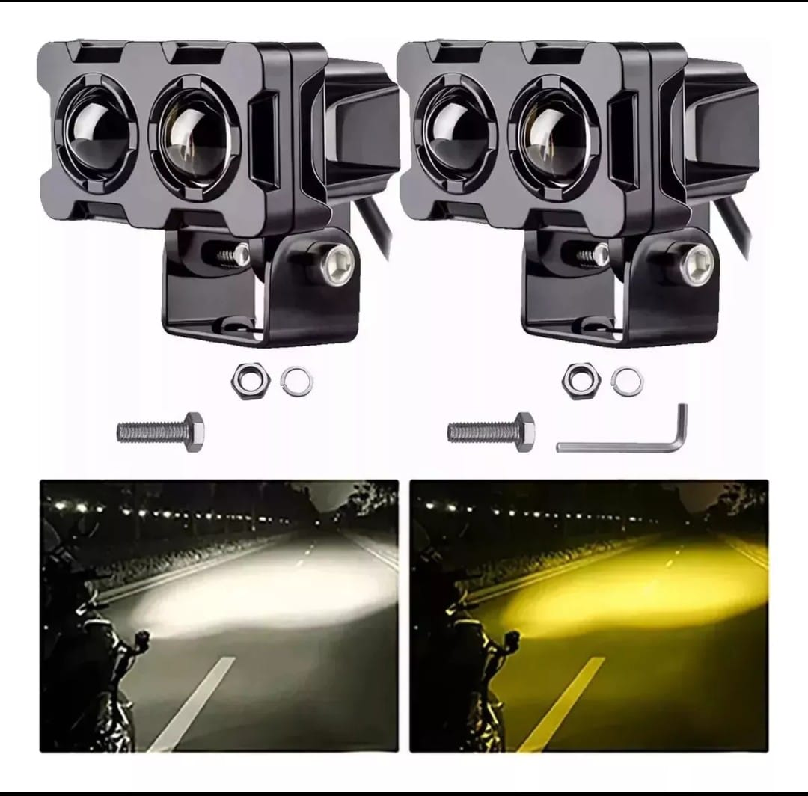 | Especificaciones: Nombre del producto: Faros Auxiliares Color: focos blancos y amarillos. Peso: 220g Accesorios: soporte de luz de trabajo, tornillos Voltaje de entrada: 9-60V Potencia óptica: luz amarilla de haz bajo 30w, luz amarilla y blanca de haz alto 45w Efecto de iluminación: luz amarilla/luz blanca Material del producto: cuerpo de lámpara de aluminio engrosado Modelos aplicables: vehículos eléctricos/motocicletas y otros modelos |
| 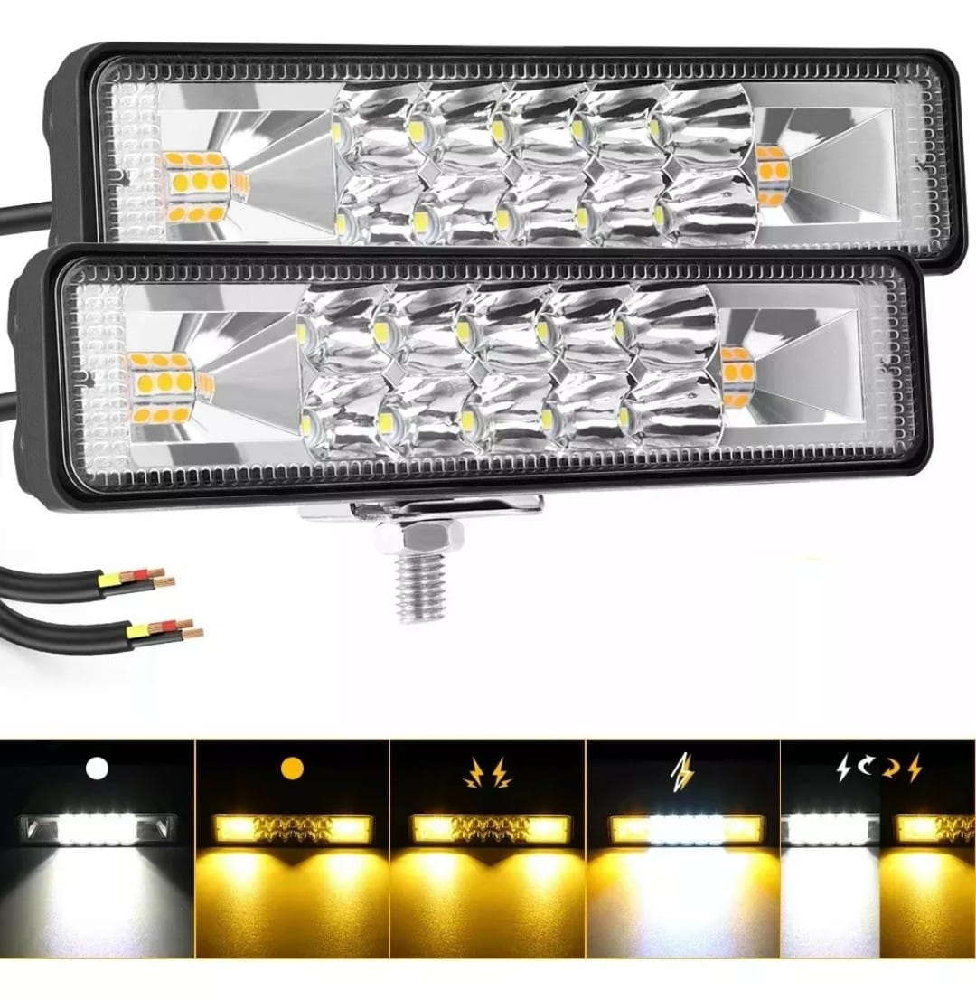 | Descripción del producto 1. Kit de chips Led para faros: nuestras 16 luces de trabajo Led utilizan chips Led avanzados y proporcionan 6400lm,6500K luz blanca súper brillante, que es mucho más brillante que los 14 chips de productos similares. |
| 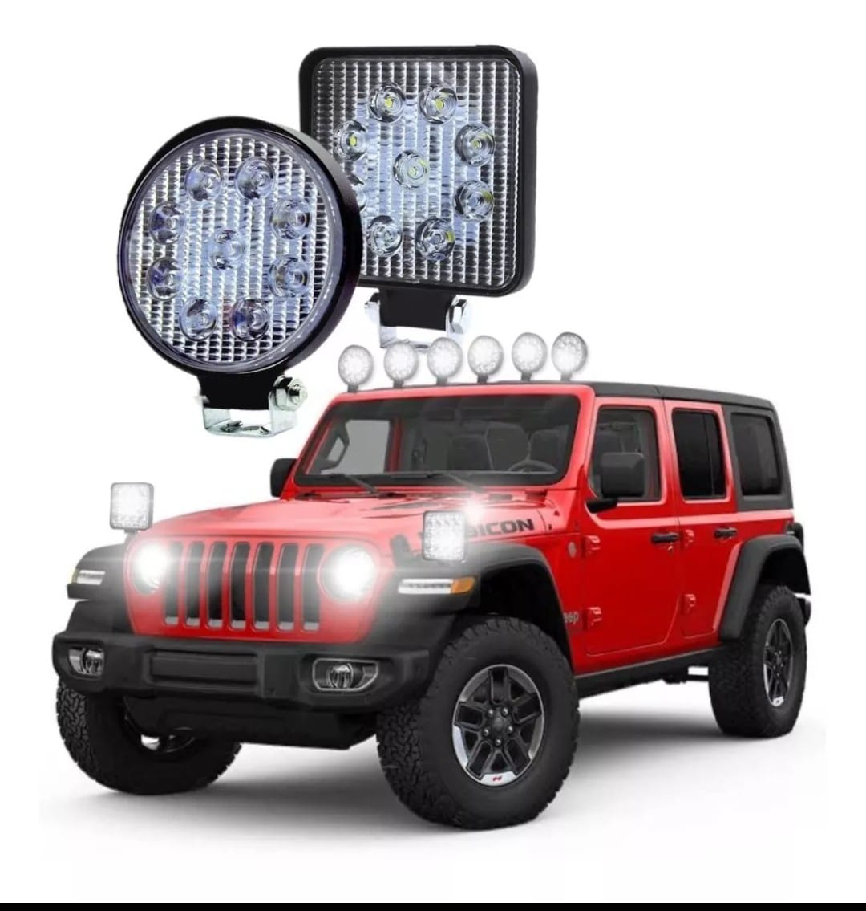 | Características: (Por pieza) Cantidad de Leds: 9 Leds Consumo: 60 Watts Voltaje de operación: 12Vcc Lúmenes: 3000LM Tipo de proyección: Spot Temperatura color: 6000k – 2200K Color de luz: Blanco Frio Tiempo de vida: 50,000 horas reales Distancia de penetración: 250m Material Aluminio con cubierta de policarbonato resistente al impacto |
| 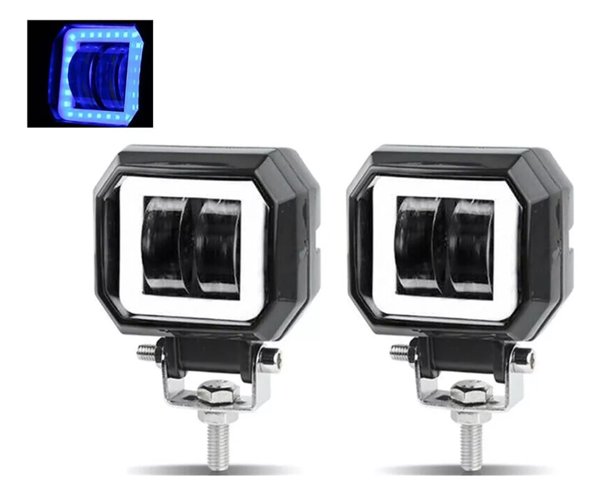 | FAROS CUADRADOS CON LUPA, ESTROBO Y ARILLO GEL AZUL 12/80V PAR DE FAROS AUXILIARES PARA MOTOCICLETA LUZ LED BLANCA CON LUPA OJO DE ÁNGEL AZUL INCLUYE BASES Y TORNILLOS PARA SU INSTALACIÓN MEDIDAS: ANCHO 7 CM, ALTO 6 CM (CON BASE 8 CM), PROFUNDIDAD 4.4 CM |
| 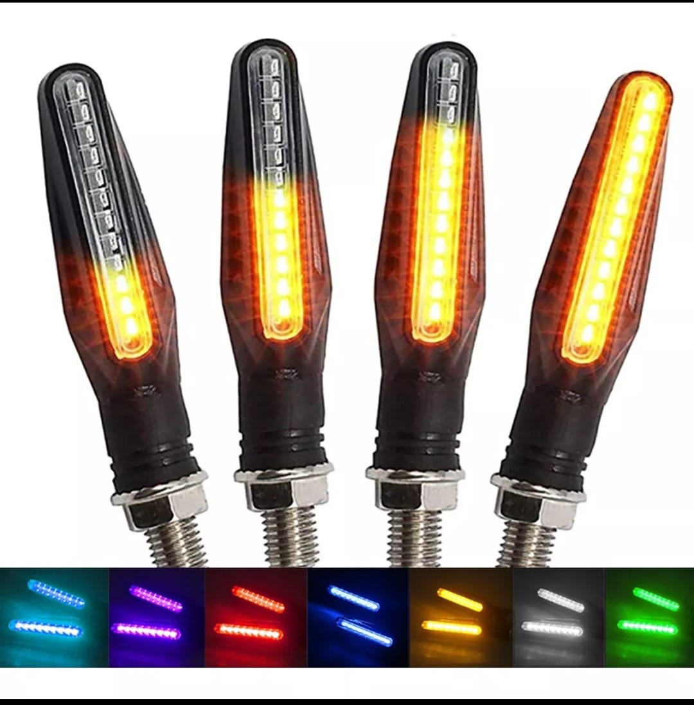 | Descripción Peso: 0,132 kg Tamaño del producto: 11*6*4cm Material del producto: nuevo plástico ABS + perlas de lámpara LED Modelos aplicables: modelos con voltaje de 12v Orificio de montaje: 10MM [4PCS Indicadores de motocicleta] Viene con 4PCS Luces de señal de giro, 12V Universal Adecuado para motocicleta Moto Scooter Quad Cruiser Off Road [Nueva versión de luz de circulación diurna y función de luz de freno] Nueva versión de luz de circulación, la luz de circulación diurna escaneará una vez cuando comience, muy genial (Aviso: la señal de giro se usará primero: cuando la luz de circulación diurna o la luz de freno está encendido, la señal de giro también se enciende al mismo tiempo, solo la señal de giro está encendida en este momento; cuando la señal de giro está apagada, la luz de circulación diurna o la luz de freno vuelve a su original |
| 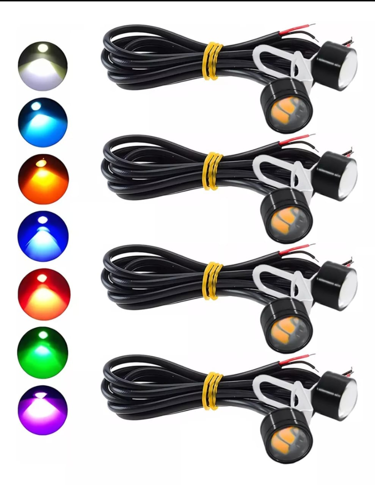 | Color de la carcasa: negro Material: carcasa de aluminio + cuentas de luz súper brillantes + lentes de concentración Posicionamiento: iluminación decorativa Fuente de luz: 180 grados en tres direcciones - Luz LED central Parámetros: voltaje dc12v, Potencia 3w, valor óptico 70 - 200lm Colores disponibles: blanco, azul, rojo, amarillo, verde, Rosa - morado, azul hielo Uso: luz antiniebla delantera y trasera / luz de circulación diurna / luz de giro / luz de parachoques / luz de marcha atrás / flash de advertencia |
| 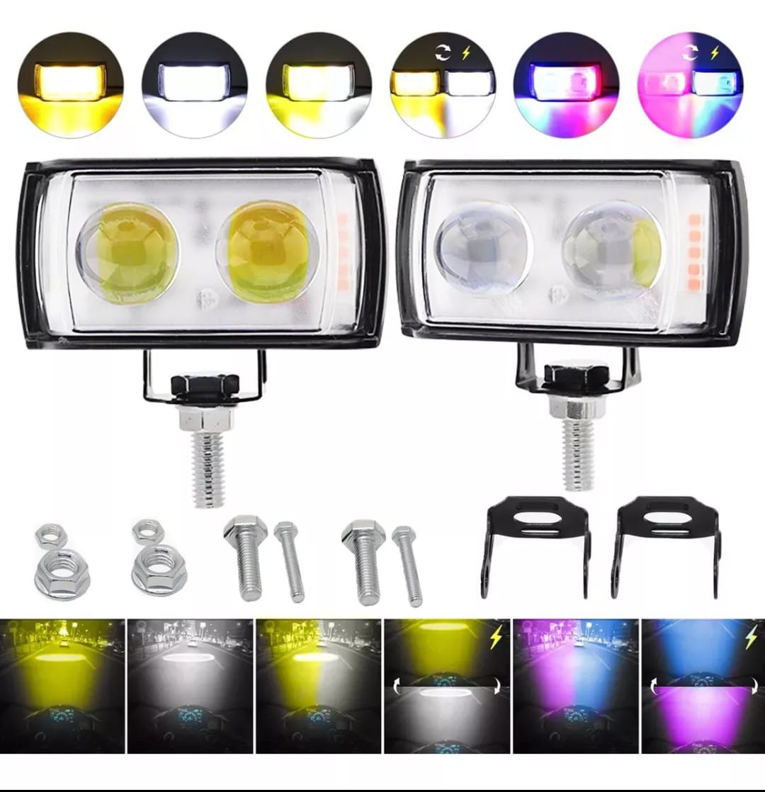 | 6 modos de iluminación: A diferencia de otras bombillas, la mayoría de las bombillas solo pueden emitir un color de luz (blanca o amarilla). Nuestro foco LED se puede cambiar libremente entre 6 modos. La luz ámbar/amarilla de 3000 K se usa para luces bajas (usadas como luces antiniebla), la luz blanca de 6000 K se usa para luces altas (usadas como luces de conducción) y la luz blanca y amarilla de 4500 K se usa para iluminación de rango medio. La luz azul y roja se utilizan para las luces de advertencia antiniebla, los modos de luz estroboscópica azul y roja se utilizan para las luces de advertencia de emergencia y también hay un modo estroboscópico de luz blanca. Luces de conducción, faros antiniebla y luces de advertencia en uno. Ya sea una noche despejada o un día lluvioso y con niebla, puede hacer el trabajo perfectamente. |